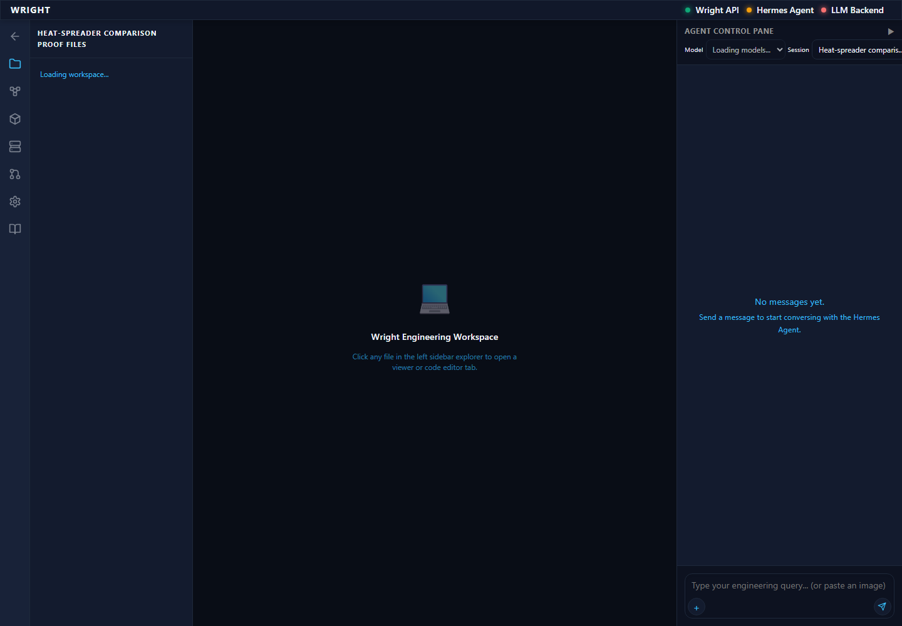
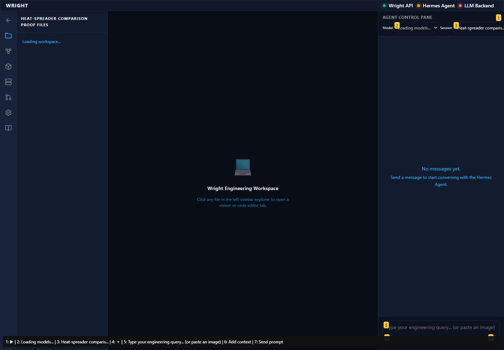
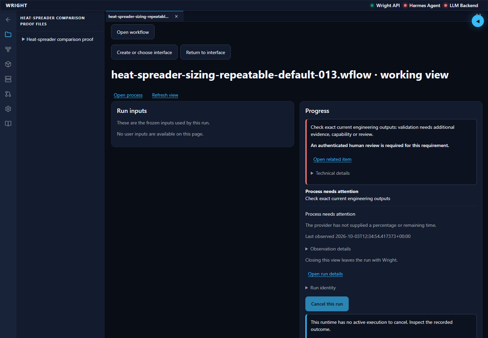
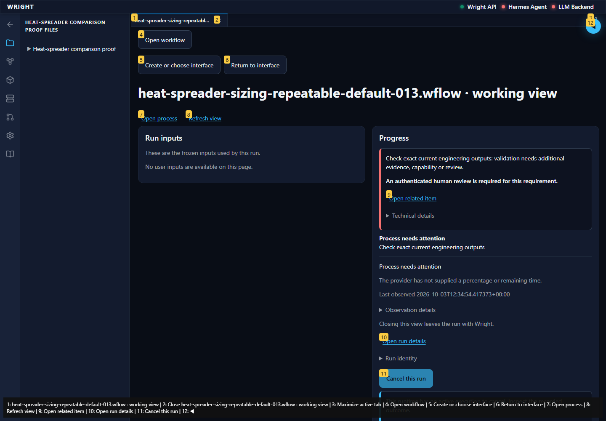
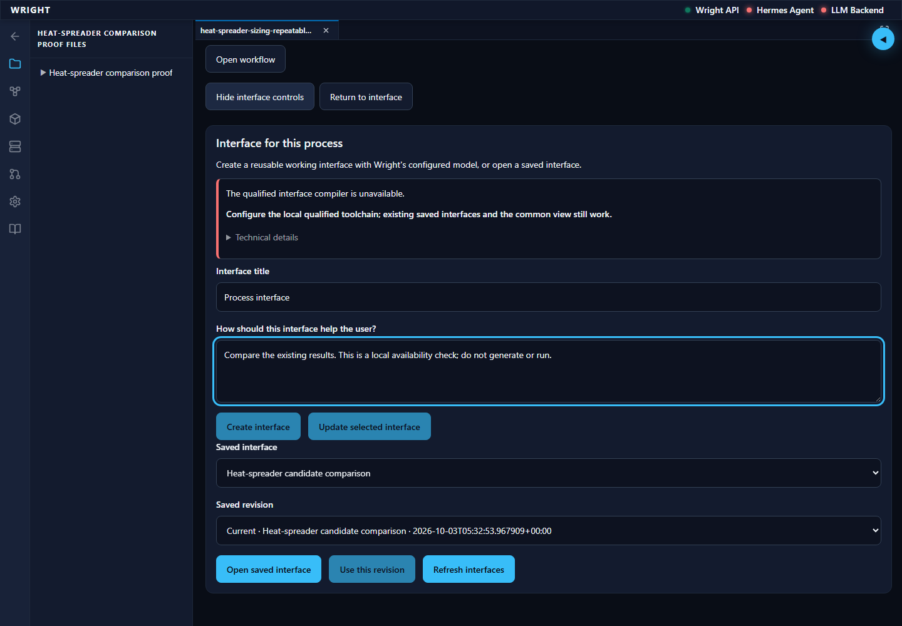
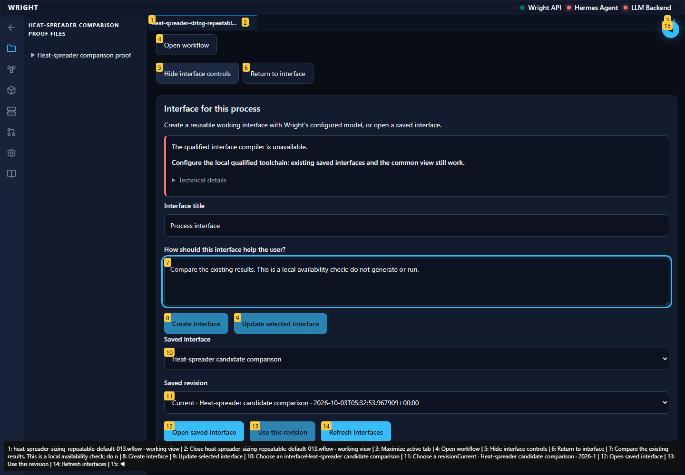
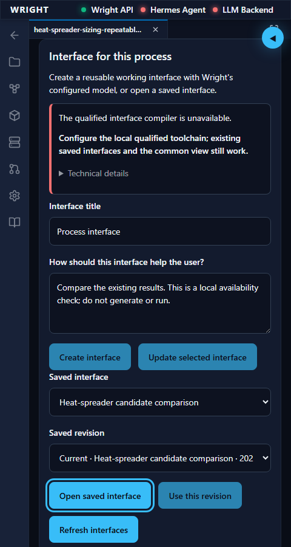
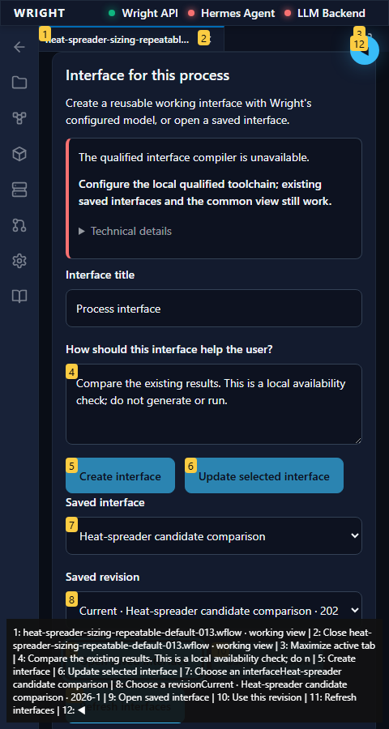
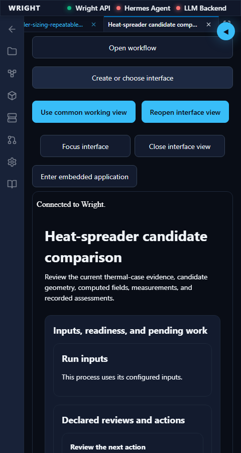
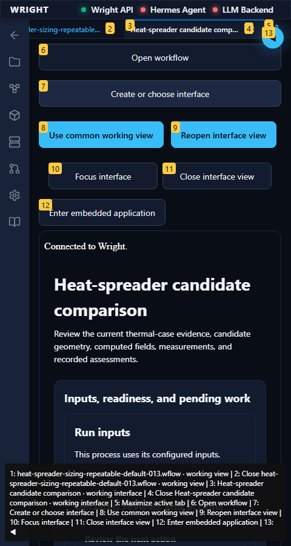

Normal installed Wright workspace; compiler/model deliberately unavailable; actual saved engineering outputs. No mocked routes or generation/process/review/action submission.
Status: pass
The updated package opens through the normal workspace.
Expected: Existing workspace navigation visible.
Actual: Normal Workflows and Files controls are available.
raw 
annotated 
The saved and common views show the same outputs.
Expected: Exact original outputs in both views.
Actual: 18 exact results retained; run 63b639c7a8f446cd90a9285921ab9072.
raw 
annotated 
Creation is unavailable, with a visible reason; saved interfaces remain usable.
Expected: Visible actionable reason; Create/Update disabled and exact saved interface enabled.
Actual: Reason: The qualified interface compiler is unavailable. Configure the local qualified toolchain; existing saved interfaces and the common view still work. Technical details. Exact saved interface and revision retained; no creation is submitted.
raw 
annotated 
Authoring controls remain usable at compact width and accessible by keyboard.
Expected: No outer overflow, zero scoped automated violations, exact keyboard focus order.
Actual: Document 432px/432px; zero WCAG A/AA violations; keyboard reaches exact saved revision and Open saved interface.
raw 
annotated 
Keyboard activation opens the exact saved interface in the same workspace.
Expected: Exact UI/revision/run with all original outputs and no generation.
Actual: Exact backend binding and 18 result identities verified; no creation, process start, review or action submitted.
raw 
annotated 